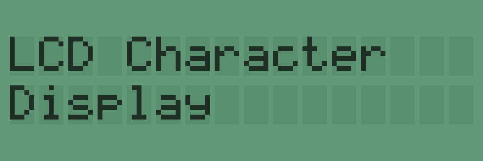
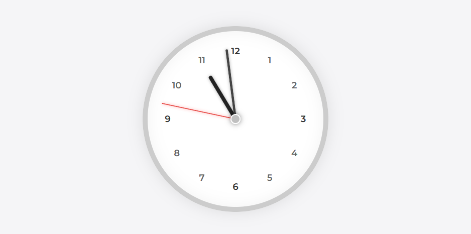
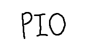
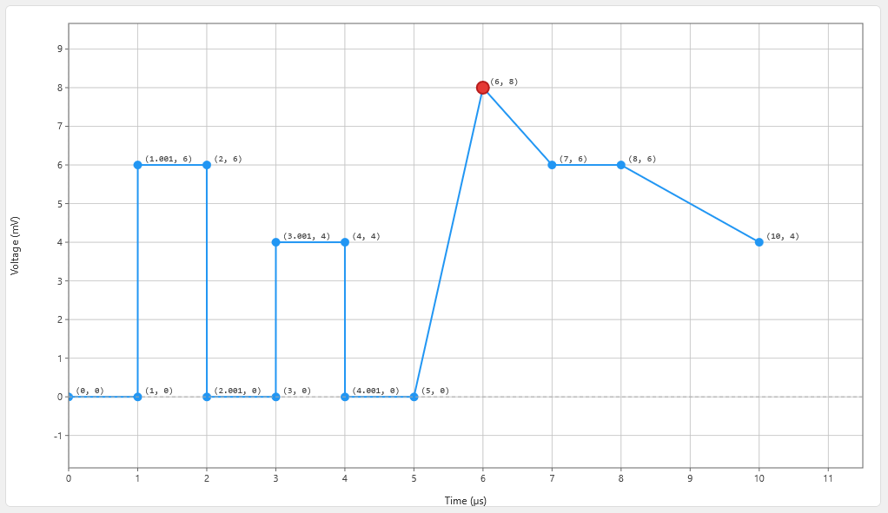
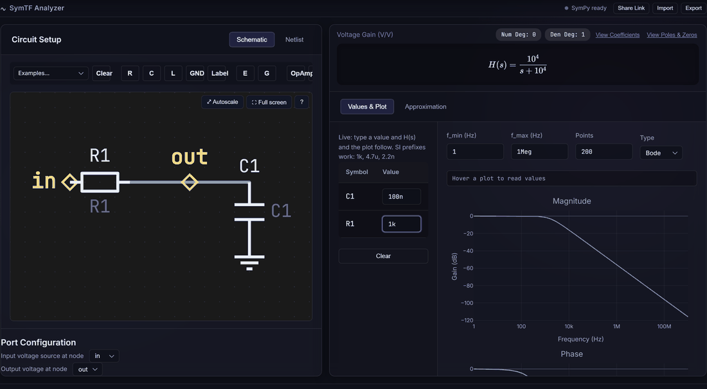

<main id="main" class="site-main">
        <div class="blog-container">
            <!-- パンくずリスト -->
            <nav class="breadcrumb" aria-label="パンくずリスト">
                <ol class="breadcrumb-list">
                    <li class="breadcrumb-item">
                        <a href="index.html" class="breadcrumb-link">ホーム</a>
                    </li>
                    <li class="breadcrumb-item">
                        <span class="breadcrumb-current">Webツール</span>
                    </li>
                </ol>
            </nav>

            <div class="article-header">
                <h1 class="article-title">Webツール</h1>
                <div class="article-meta">
                    <div class="article-date">最終更新: 2026年7月17日</div>
                </div>
            </div>

            <div class="banner-page-content">
                <div class="banner-description">
                    <p>自作Webツールの一覧です。</p>
                </div>

                <div class="banner-grid">

                    <!-- LCDジェネレーター（カード全体クリック可能） -->
                    <a class="banner-item" href="tools/lcd_gen/index.html">
                        
                        <div class="banner-description">
                            <p class="banner-title">Character LCD Generator</p>
                            <p class="banner-text">5×8ドットのキャラクタLCDを再現する画像ジェネレータ</p>
                        </div>
                    </a>

                    <a class="banner-item" href="tools/analog_clock/index.html">
                        
                        <div class="banner-description">
                            <p class="banner-title">アナログ時計</p>
                            <p class="banner-text">OBSなどにも便利！シンプルなアナログ時計</p>
                        </div>

                    </a>

                    <a class="banner-item" href="tools/pio_sim/index.html">
                        
                        <div class="banner-description">
                            <p class="banner-title">PIOシミュレータ</p>
                            <p class="banner-text">RP2040/RP2350のPIO用アセンブリコードのシミュレータ</p>
                        </div>
                    </a>

                    <a class="banner-item" href="tools/pwl_gen/index.html">
                        
                        <div class="banner-description">
                            <p class="banner-title">SPICE PWL Generator</p>
                            <p class="banner-text">SPICEシミュレータ用PWL波形をブラウザ上でインタラクティブに編集・生成</p>
                        </div>
                    </a>

                    <a class="banner-item" href="tools/SymTF/index.html">
                        
                        <div class="banner-description">
                            <p class="banner-title">SymTF</p>
                            <p class="banner-text">回路図から伝達関数を記号的に導出。極・零点やBodeプロット、近似式の比較にも対応</p>
                        </div>
                    </a>

                </div>

            </div>

            <div class="article-footer">
                <div class="back-link">
                    <a href="index.html" class="back-button">← ホームに戻る</a>
                </div>
                <div class="article-info">
                    <p>最終更新: 2026年7月17日</p>
                </div>
            </div>
        </div>
    </main>
